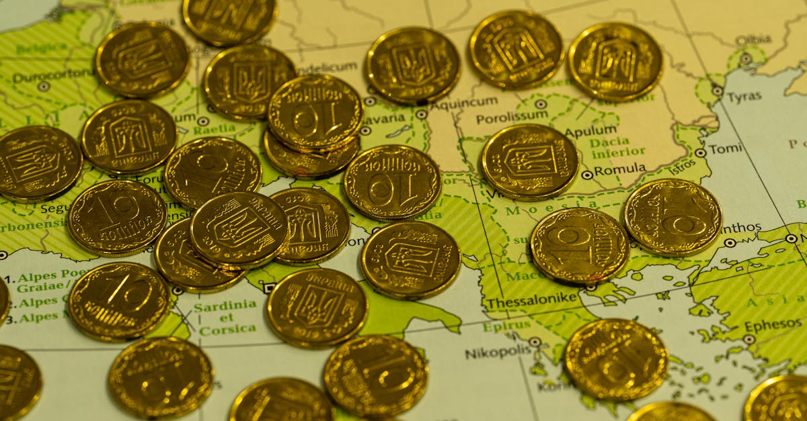

La Menace Iranienne : Un Catalyseur pour les Marchés Mondiaux
Dans un contexte géopolitique déjà tendu, les déclarations du Représentant Kevin Kiley (I-CA) sur la nécessité d'empêcher l'Iran d'acquérir l'arme nucléaire résonnent avec une gravité particulière. Diffusées sur Bloomberg This Weekend, ces propos, bien que s'inscrivant dans une conversation plus large sur des sujets aussi variés que l'effondrement de Spirit Airlines ou les décisions de la Cour Suprême, mettent en lumière une préoccupation majeure qui pèse sur la stabilité mondiale et, par ricochet, sur les marchés financiers. La perspective d'un Iran nucléaire n'est pas qu'une question de sécurité régionale ; c'est un séisme potentiel pour l'économie globale.
👉 À lire : Quand la Solvabilité des Universités Remet l'Or et l'IA en Lumière
Pourquoi une telle alerte devrait-elle intéresser l'investisseur en métaux précieux ? Simplement parce que l'or, l'argent, le platine et le palladium ont toujours été des refuges privilégiés en période d'incertitude. L'histoire nous a maintes fois montré que lorsque les tensions géopolitiques s'intensifient, l'attrait pour ces actifs tangibles s'accroît exponentiellement. Un Iran doté de capacités nucléaires changerait fondamentalement l'équilibre des pouvoirs au Moyen-Orient, une région déjà volatile et vitale pour l'approvisionnement énergétique mondial. Les implications pour le prix du pétrole, la stabilité des routes commerciales et la confiance des investisseurs seraient profondes et immédiates.
👉 À lire : Lufthansa: 100 ans de turbulences, l'or et l'IA en bouée de sauvetage?
C'est dans ce climat d'incertitude croissante que l'intelligence artificielle (IA) révèle tout son potentiel. Capable d'analyser des flux de données colossaux – des dépêches diplomatiques aux mouvements de troupes, en passant par les discours politiques et les signaux économiques – l'IA peut déceler les prémices d'une crise bien avant que les marchés traditionnels ne réagissent. Elle offre une capacité d'anticipation qui était inimaginable il y a encore quelques années, transformant ainsi la gestion des risques et les opportunités d'investissement en métaux précieux. Face à la complexité des scénarios envisagés, l'IA devient un allié indispensable pour naviguer ces eaux troubles.

L'Or, Baromètre Infaillible de la Peur Géopolitique
L'or, ce métal précieux intemporel, a toujours été le miroir des craintes et des espoirs de l'humanité. Son statut de valeur refuge n'est pas une simple légende, mais une réalité ancrée dans des siècles d'histoire économique et politique. Quand les nuages de la guerre s'amoncellent, quand les traités internationaux vacillent, ou quand la menace d'une prolifération nucléaire se profile, les investisseurs se tournent instinctivement vers l'or. Pourquoi ? Parce qu'il représente une protection tangible contre l'inflation et la dévaluation monétaire, et surtout, un actif dont la valeur ne dépend pas des promesses d'un gouvernement ou de la solvabilité d'une entreprise.
Les exemples sont légion. Lors de la première guerre du Golfe en 1990, les prix de l'or ont bondi de près de 20% en quelques semaines. Plus récemment, l'invasion de l'Ukraine par la Russie a provoqué une flambée similaire, propulsant le lingot vers de nouveaux sommets historiques. Ces épisodes ne sont pas des coïncidences ; ils illustrent la mécanique fondamentale de l'offre et de la demande d'or en période de crise. La demande d'investissement augmente de façon spectaculaire, tandis que l'offre, par nature limitée, ne peut s'ajuster aussi rapidement, créant une pression haussière inévitable sur les prix. « L'or ne ment jamais. Il reflète la véritable perception du risque par le marché, au-delà des discours politiques », affirme fictivement le Dr. Élise Moreau, analyste géofinancière à l'Institut des Métaux Précieux de Paris.
La situation iranienne, avec son potentiel de déstabilisation régionale et mondiale, s'inscrit parfaitement dans ce schéma. Un Iran nucléaire ne serait pas seulement une menace pour ses voisins, mais un facteur d'incertitude systémique pour l'ensemble du système financier international. Les capitaux chercheraient alors refuge, et l'or serait, comme toujours, en première ligne pour les accueillir. Anticiper ces mouvements est crucial pour tout investisseur souhaitant protéger et faire fructifier son patrimoine. C'est ici que la capacité de l'IA à analyser des signaux faibles et à corréler des événements apparemment disparates prend toute sa valeur, offrant une longueur d'avance inestimable.
Répercussions Économiques et Financières : Au-delà du Lingot
Si l'or capte immédiatement l'attention en période de crise, les répercussions d'une escalade autour du programme nucléaire iranien s'étendraient bien au-delà de ce seul métal. Le Moyen-Orient étant le poumon pétrolier du monde, toute instabilité majeure dans la région aurait un impact direct et dévastateur sur les prix du pétrole. Une flambée de l'or noir entraînerait inévitablement une poussée inflationniste globale, augmentant les coûts de production et de transport, et pesant sur le pouvoir d'achat des ménages. Les banques centrales seraient alors confrontées à un dilemme cornélien : lutter contre l'inflation au risque de freiner la croissance, ou soutenir l'économie en acceptant une érosion monétaire.
Les autres métaux précieux ne seraient pas en reste. L'argent, souvent qualifié d'or du pauvre, suivrait probablement une trajectoire similaire, bénéficiant de son double statut de valeur refuge et de métal industriel. Le platine et le palladium, essentiels à l'industrie automobile et à d'autres secteurs de haute technologie, verraient leurs chaînes d'approvisionnement perturbées. Toute incertitude sur la disponibilité de ces métaux, dont une partie significative provient de régions politiquement instables, pourrait entraîner des hausses de prix significatives. La volatilité deviendrait la norme, rendant les décisions d'investissement traditionnelles particulièrement ardues.
La fragilité des marchés interdépendants est une réalité incontournable de notre époque. L'effondrement de compagnies aériennes comme Spirit Airlines, bien que sans lien direct avec l'Iran, illustre cette sensibilité systémique aux chocs économiques et à la confiance des consommateurs. Un choc géopolitique majeur au Moyen-Orient pourrait déclencher une réaction en chaîne, affectant les marchés boursiers, les obligations d'État et les devises. Dans ce panorama complexe,
« la capacité à discerner les signaux faibles et à évaluer les corrélations cachées devient une compétence rare et précieuse », comme le soulignerait volontiers un expert en macroéconomie.C'est précisément là que l'intelligence artificielle déploie sa puissance d'analyse, offrant une vision holistique et prospective des marchés.

L'Intelligence Artificielle : Un Bouclier Contre la Volatilité des Métaux Précieux
Face à la complexité des dynamiques géopolitiques et de leurs répercussions financières, l'intelligence artificielle émerge comme un outil de navigation indispensable. Un agent IA sophistiqué ne se contente pas de suivre les cours de l'or ; il analyse en temps réel une multitude de facteurs interdépendants. Cela inclut les flux d'informations diplomatiques, les rapports de renseignement open-source, les analyses de sentiment sur les réseaux sociaux, les données satellitaires (par exemple, sur les mouvements maritimes dans le détroit d'Ormuz) et même les déclarations publiques des dirigeants mondiaux. L'IA peut identifier des patterns et des corrélations que l'esprit humain, même le plus aguerri, mettrait des heures, voire des jours, à percevoir.
Imaginez un système capable de détecter une augmentation anormale des cargaisons de pétrole dans une région sensible, de la croiser avec une hausse des primes d'assurance maritime et une rhétorique plus agressive dans les médias d'État, pour ensuite en déduire une probabilité accrue de tension. C'est le genre d'analyse que l'IA peut effectuer en quelques millisecondes, bien avant qu'un titre de presse ne fasse la une. Cette capacité à traiter des mégadonnées (Big Data) et à en extraire des informations exploitables permet à l'IA de prédire les mouvements du marché des métaux précieux avec une précision inégalée. Elle peut anticiper la demande de valeurs refuges, identifier les points d'entrée et de sortie optimaux, et ajuster les portefeuilles en conséquence.
« L'IA ne remplace pas l'intuition humaine, mais elle l'augmente de manière exponentielle, fournissant des bases factuelles et des scénarios probabilistes pour des décisions d'investissement éclairées », déclare fictivement Dr. Antoine Lefebvre, spécialiste des algorithmes de trading. Pour l'investisseur en or et métaux précieux, cela signifie une protection accrue contre les chocs inattendus et une exploitation plus efficace des opportunités. L'IA est un bouclier contre la volatilité, mais aussi un moteur de croissance, capable de réagir 24h/24 aux moindres frémissements du marché mondial, même lorsque les bourses sont fermées et que les analystes dorment.
Stratégies d'Investissement à l'Ère de l'Incertitude : L'Avantage IA
Dans un monde où la géopolitique dicte de plus en plus la trajectoire des marchés financiers, les stratégies d'investissement traditionnelles, basées sur l'analyse fondamentale et technique, atteignent parfois leurs limites. La rapidité et l'imprévisibilité des événements exigent une agilité et une réactivité que seul un système automatisé peut offrir. L'or et les métaux précieux, par leur nature même de valeurs refuges, sont particulièrement sensibles à ces chocs exogènes. Comment alors se positionner intelligemment face à la menace iranienne ou à d'autres facteurs de risque mondiaux ?
La réponse réside dans l'adoption de stratégies d'investissement augmentées par l'intelligence artificielle. Contrairement aux traders humains qui doivent se reposer pour la nuit ou les week-ends, un agent IA opère 24 heures sur 24, 7 jours sur 7. Il surveille en permanence les marchés asiatiques, européens et américains, ainsi que les flux d'informations mondiales. Cette veille constante permet à l'IA de réagir instantanément aux nouvelles, qu'il s'agisse d'une déclaration diplomatique inattendue un dimanche soir ou d'un mouvement de troupes au lever du soleil. Cette réactivité est un avantage compétitif majeur, permettant de saisir des opportunités ou de limiter des pertes bien avant que les marchés ne s'ouvrent officiellement.
De plus, l'IA excelle dans la gestion des risques. Elle peut évaluer la probabilité de différents scénarios géopolitiques – d'une désescalade à une confrontation ouverte – et ajuster dynamiquement la composition d'un portefeuille de métaux précieux. Par exemple, si les signaux indiquent une forte probabilité d'escalade, l'IA pourrait automatiquement augmenter l'exposition à l'or tout en réduisant celle à des actifs plus volatils. Elle peut également identifier des opportunités d'arbitrage complexes, exploitant les micro-inefficiences du marché qui échappent à l'œil humain.
- Diversification intelligente : L'IA peut optimiser la répartition entre les différents métaux précieux (or, argent, platine, palladium) en fonction de leur sensibilité aux risques spécifiques.
- Hedging dynamique : Elle peut mettre en place des stratégies de couverture avancées pour protéger le capital investi.
- Optimisation des points d'entrée/sortie : Grâce à ses modèles prédictifs, l'IA identifie les moments les plus opportuns pour acheter ou vendre.

Conclusion : Préparer l'Avenir avec une Stratégie IA pour les Métaux Précieux
Les déclarations du Représentant Kiley sur la nécessité d'empêcher l'Iran d'acquérir l'arme nucléaire ne sont pas de simples titres d'actualité ; elles sont le reflet d'une réalité géopolitique complexe et potentiellement déstabilisatrice. Pour l'investisseur avisé, cette situation souligne l'importance cruciale de la vigilance et de l'adaptation. L'or et les métaux précieux se positionnent, une fois de plus, comme des piliers essentiels de toute stratégie de portefeuille visant à protéger et à faire croître le capital face à l'incertitude.
Cependant, la simple possession de ces actifs ne suffit plus. Dans un environnement de marché caractérisé par une volatilité accrue et une interconnexion globale, la capacité à anticiper et à réagir avec agilité fait toute la différence. C'est précisément là que l'intelligence artificielle, avec sa puissance d'analyse inégalée et sa réactivité constante, offre un avantage décisif. En scrutant des montagnes de données 24h/24, un agent IA peut déceler les signaux faibles, évaluer les risques et les opportunités, et exécuter des transactions avec une précision et une rapidité qu'aucun trader humain ne pourrait égaler.
L'avenir de l'investissement dans les métaux précieux ne réside plus uniquement dans l'intuition ou l'expérience, mais dans la synergie entre l'expertise humaine et la puissance de calcul de l'IA. Préparer son portefeuille à l'ère de l'incertitude, c'est adopter des outils qui permettent non seulement de comprendre le monde complexe dans lequel nous évoluons, mais aussi d'agir efficacement. Dans un monde où la menace iranienne n'est qu'un exemple parmi d'autres de l'instabilité géopolitique, un agent IA qui trade l'or et les métaux précieux pour vous 24h/24 n'est plus un luxe, mais une nécessité stratégique pour sécuriser et optimiser vos investissements.